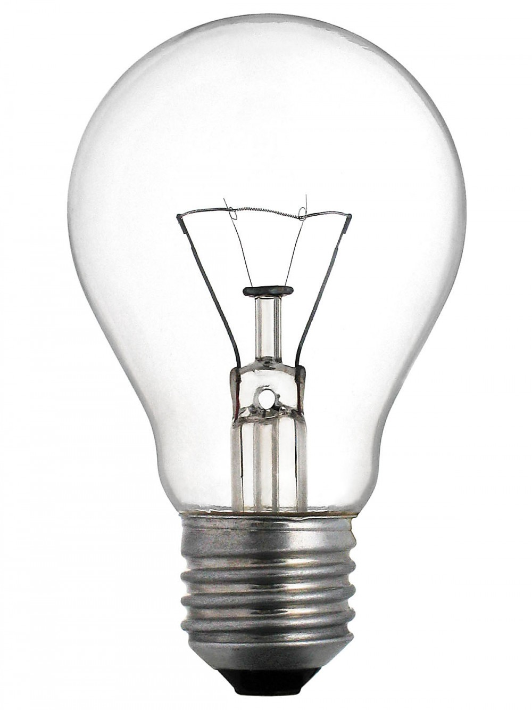

Choose a replacement bulb
|  | ||
| Compact Fluorescent Light (CFL) |
Light Emitting Diode (LED) | Incadescent |
| Compact fluorescent lamps can replace incandescent lamps that are roughly 3–4 times their wattage, saving up to 75% of the initial lighting energy. They are made of a glass tube filled with a low pressure mixture of gases, specifically mercury and noble gases. The tube is coated on the inside with a fluorescent material, usually a compound containing phosphorous. When the current is switched on, the starting mechanism produces electrons that excite the gases inside the tube which then release ultraviolet radiation. This in turn excites the coating on the inside of the tube, which emits visible light through the surface of the lamp. | An LED lamp or LED light bulb is an electric light that produces light using light-emitting diodes (LEDs). LED lamps are significantly more energy-efficient than equivalent incandescent lamps and can be significantly more efficient than most fluorescent lamps,[1][2][3] The most efficient commercially available LED lamps have efficiencies of 200 lumens per watt (Lm/W).[4][5][6] Commercial LED lamps have a lifespan many times longer than incandescent lamps. | An incandescent light bulb, incandescent lamp or incandescent light globe is an electric light with a wire filament heated until it glows. The filament is enclosed in a glass bulb with a vacuum or inert gas to protect the filament from oxidation. Current is supplied to the filament by terminals or wires embedded in the glass. A bulb socket provides mechanical support and electrical connections. |
| Source: GreenFacts.org | Source: Wikipedia.org | Source: Wikipedia.org |